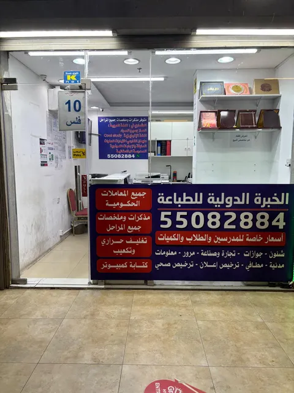

دليل عملي
أخطاء تؤخر تجديد الترخيص التجاري
أكثر الأخطاء شيوعًا في عقد الإيجار والعنوان وموافقات النشاط.
قراءة المقال ←أدلة عملية تساعدك على تجهيز معاملات الشركات والأفراد وملفات الطباعة وتنظيم المستندات قبل التنفيذ.

أكثر الأخطاء شيوعًا في عقد الإيجار والعنوان وموافقات النشاط.
قراءة المقال ←ترتيب نموذج الإقامة والجواز وبيانات الكفيل قبل التجديد.
قراءة المقال ←خطوات مراجعة الجواز والبطاقة المدنية والتأمين الصحي وبيانات الشركة.
قراءة المقال ←قائمة عملية لتنظيم مستندات تأسيس شركة في الكويت قبل الطباعة أو رفع الملفات، مع نصائح لتقليل النواقص.
قراءة المقال ←دليل عملي لتنظيم مستندات تجديد الترخيص التجاري قبل تقديم المعاملة.
قراءة المقال ←نصائح لتنظيم البيانات والمستندات قبل طلب مستخرج السجل التجاري وطباعته في الكويت.
قراءة المقال ←ما الذي يجب مراجعته قبل البدء في معاملة تعديل بيانات الشركة؟
قراءة المقال ←نصائح عملية لتنظيم مستندات تعديل الشركاء في الشركة قبل الطباعة أو تقديم المعاملة في الكويت.
قراءة المقال ←دليل عملي لترتيب ملف إصدار أو تجديد ترخيص إعلان قبل الطباعة والتقديم.
قراءة المقال ←طريقة عملية لتسمية وترتيب ودمج مستندات الشركة قبل الطباعة أو رفعها إلى الجهات المختلفة.
قراءة المقال ←نصائح لترتيب مستندات الالتحاق بعائل وتقليل أخطاء الطباعة والرفع.
قراءة المقال ←كيفية تجهيز صورة واضحة ومناسبة لتحديث البطاقة المدنية.
قراءة المقال ←نصائح عملية لتنظيم المستندات المطلوبة لتحديث عنوان السكن والبطاقة المدنية قبل الطباعة أو الرفع.
قراءة المقال ←خطوات بسيطة لمراجعة ملف PDF أو Word قبل إرساله للطباعة وتجنب أخطاء المقاس والترتيب والصفحات.
قراءة المقال ←قائمة مراجعة للطلاب قبل طباعة الأبحاث والمشاريع والتقارير لضمان الترتيب والجودة المناسبة.
قراءة المقال ←مقارنة بسيطة تساعدك في اختيار نوع التجليد المناسب.
قراءة المقال ←نصائح لمسح المستندات ضوئيًا وتجميعها في ملف واحد.
قراءة المقال ←إرشادات لتحسين جودة مسح المستندات ضوئيًا وتحويلها إلى PDF واضح ومنظم.
قراءة المقال ←تعرف على خدمات الطباعة والتصوير والسكانر والتجليد وتجهيز الملفات المتاحة لدى الخبرة الدولية في حولي.
قراءة المقال ←تعرف على خدمات الطباعة والتصوير والتجليد والسكانر وتجهيز الملفات المتاحة في حولي بالقرب من شارع قتيبة.
قراءة المقال ←